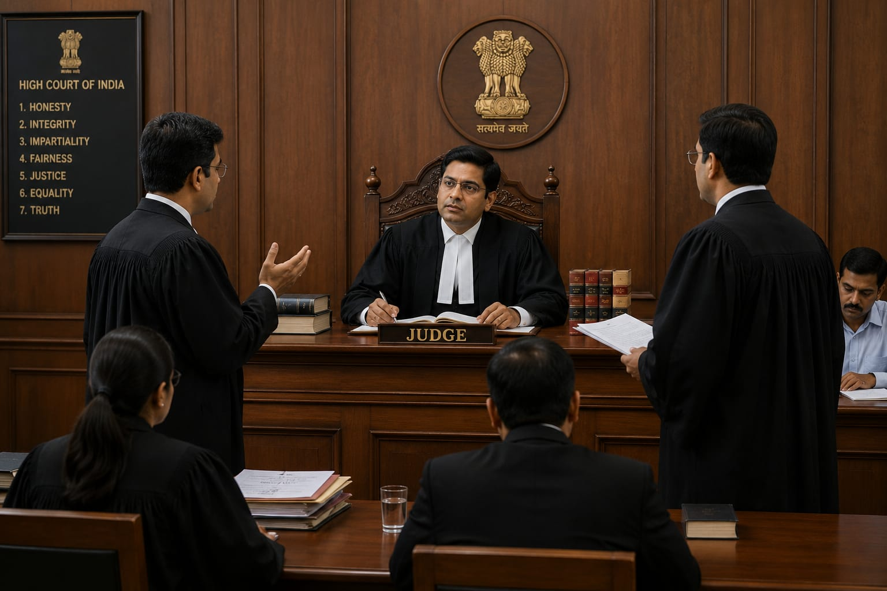

- Imagine two people have a disagreement about something important. They decide to take the matter to court to find a solution.
- The judge listens carefully to both sides and looks at the evidence.
- The judge then checks what the law says about the situation.
- After understanding the case, the judge makes a fair decision based on the law and the evidence.
- 👉 In simple words: A judge listens, understands the case, and makes a fair decision according to the law.
Judge
What Do They Do?

🎓 How to Become a Judge
- You need to first complete an LL.B.
- After completing your LL.B., you can apply for the State Judicial Service Examination according to the rules of your state.
- If you are selected, you can start as a Civil Judge / Judicial Magistrate.
- With experience and promotion, you can move to higher judicial positions such as District Judge.
- High Court and Supreme Court Judges are appointed through separate constitutional processes. They are not automatic promotions from the District Judge position.
These courses help students learn laws, legal systems, court procedures, and how to represent people in legal matters.
BA LLB (Bachelor of Arts + Bachelor of Laws)
Duration: 5 Years
Eligibility: 12th Pass (Any Stream)
Entrance Exam: CLAT UG / AILET / SLAT / State Law Exam
BBA LLB (Bachelor of Business Administration + Bachelor of Laws)
Duration: 5 Years
Eligibility: 12th Pass (Any Stream)
Entrance Exam: CLAT UG / SLAT / State Law Exam
B.Com LLB (Bachelor of Commerce + Bachelor of Laws)
Duration: 5 Years
Eligibility: 12th Pass (Commerce Preferred)
Entrance Exam: CLAT UG / State Law Exam
B.Sc LLB (Bachelor of Science + Bachelor of Laws)
Duration: 5 Years
Eligibility: 12th Pass (Science Stream)
Entrance Exam: CLAT / University Entrance Exams
Note: Students from Arts, Science, or Commerce streams can pursue law through integrated 5-year LLB programs after 12th.
These courses help graduates build advanced legal knowledge, specialize in specific areas of law, and prepare for higher legal careers.
3-Year LLB (Bachelor of Laws)
Duration: 3 Years
Eligibility: Any Bachelor's Degree
Entrance Exam: CUET PG / State Law Exam / NLSAT
LLM (Master of Laws)
Duration: 1–2 Years
Eligibility: LLB Degree
Entrance Exam: CLAT PG / AILET PG / CUET PG
📝 Exam Details
(Click on the exam name to see full details)
CUET PG State Law Entrance Exam NLSAT CLAT PG AILET PGNote: Students who have already completed a bachelor's degree can pursue a 3-Year LLB to become an advocate. LLM is an advanced degree for legal specialization and research.
Note:
(Age limits, marks, and admission process may vary depending on the college or state.
Below are some colleges that offer these courses.
These courses are available in many colleges and universities across India. You can choose colleges based on your location, budget, and entrance exams.)
🏛️ Colleges offering these courses in India
(Tap on a college to view details)
After Class 12
National Law School of India University (NLSIU), Bengaluru National Law University (NLU), New Delhi Gujarat National Law University (GNLU), Gandhinagar National Law University (NLUO), Cuttack, Odisha Panjab University, Chandigarh Tamilnadu Dr. Ambedkar Law University (TNDALU), Chennai, Tamil Nadu WB National University of Juridical Sciences (WBNUJS), Kolkata, zwest Bengal National Law Institute University (NLIU), Bhopal, Madhya PradeshAfter Graduation
Government Law College, Mumbai, Maharashtra National Law School of India (NLSIU), Bengaluru, Karnataka Chanakya National Law University (CNLU), Patna, Bihar Government Law College, Thiruvananthapuram, Kerala Banaras Hindu University (BHU), Varanasi National Law School of India University (NLSIU), Bengaluru, Karnataka Cochin University of Science and Technology (CUSAT), Kerala Government Law University, Delhi ILS Law College, PuneSTEP 1
Imagine you are a judge and your day starts at the court.
STEP 2
You read about the cases that are scheduled for the day.
STEP 3
You listen to both sides of a case and hear what the lawyers have to say.
STEP 4
You look at the evidence and ask questions when something is not clear.
STEP 5
You write down your decision after carefully considering the facts, evidence, and law.
STEP 6
👉 If you enjoy learning about the law, understanding different situations, and making fair decisions, this career may suit you.
District & Sessions Courts
Judges hear and decide different types of cases.
Magistrate Courts
Judicial Magistrates deal with criminal cases at the lower court level.
High Courts
High Court judges hear important cases and appeals.
Supreme Court
Supreme Court judges hear cases and appeals at the highest court in India.
Family Courts
Judges deal with family-related cases.
Special Courts
Judges deal with cases related to specific areas of law.
(Click Yes or No for each question)
1. Are you interested in learning the laws of our country?
2. Do you enjoy listening to different sides of a problem before deciding what is right?
3. Are you interested in helping people get justice?
4. Imagine you are working as a judge. A couple comes to court because they have a disagreement about the care of their child. As a judge, you listen to both parents, look at the facts, and make a decision based on the law. Are you interested in handling a case like this?
5. A person accused of murder is brought before the court. You listen to the lawyers and examine the evidence. After carefully looking at the evidence, you make a decision based on the law. Would you like this kind of job?